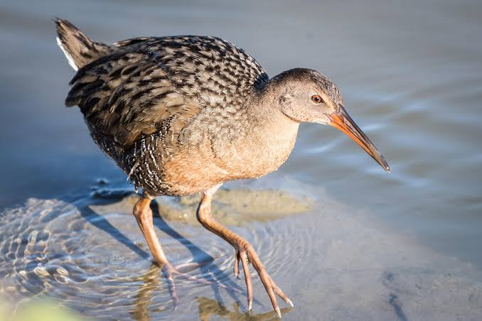

Rail
Birds
The rails, or Rallidae, are a large cosmopolitan family of small- to medium-sized, ground-living birds. The family exhibits considerable diversity and includes the crakes, coots, and gallinules.
Family: Rallidae; Rafinesque, 1815
Scientific name: Rallidae
Higher classification: Gruiformes
Phylum: Chordata
Mass: Common moorhen: 340 g, Eurasian coot: 720 g,
Length: Common moorhen: 30 – 38 cm, American coot: 38 cm,
Rail, any of 127 species of slender, somewhat chicken-shaped marsh birds, with short rounded wings, short tail, large feet, and long toes, of the family Rallidae (order Gruiformes).
The name is sometimes used to include coots and gallinules, which belong to the same family, but coots and gallinules are far more ostentatious. Coots and gallinules flock like ducks, swim in open water, and waddle conspicuously on shore.
By contrast, rails are secretive birds, hiding among reeds at the water’s edge by day and uttering their calls mostly at night.
Rails are distributed throughout the world, except in high latitudes.
They vary in size from about 11 to 45 cm (4 to 18 inches) in length. Their loud calls reveal their presence in dense vegetation. Many are excellent game birds; when flushed, they take wing reluctantly, fly a short distance, and then drop to the ground.
Their slender build facilitates running through reeds and marsh grasses. They are mostly dull coloured in grays and browns. Many are barred in irregular patterns. Short-billed species are often called crakes.
Rails hunted as game in the United States are the king rail (Rallus elegans), a reddish brown bird the size of a small chicken; the clapper rail (R. longirostris), a grayer form; the Virginia rail (R. limicola), reddish brown and about 25 cm (10 inches) in length; and the sora (see crake).
The little yellow rail (Coturnicops noveboracensis) and the American black rail (Laterallus jamaicensis) are too scarce and too small (about 15 cm [6 inches]) to be of interest to the hunter.
Biology of Rail
Flight and flightlessness
The wings of all rails are short and rounded. The flight of those Rallidae able to fly, while not powerful, can be sustained for long periods of time, and many species migrate annually.
The weakness of their flight, however, means they are easily blown off course, thus are common vagrants, a characteristic that has led them to colonize many isolated oceanic islands. Furthermore, these birds often prefer to run rather than fly, especially in dense habitat. Some are also flightless at some time during their moult periods.
Flightlessness in rails is one of the best examples of parallel evolution in the animal kingdom. Of the roughly 150 historically known rail species, 31 extant or recently extinct species evolved flightlessness from volant (flying) ancestors.
This process created the endemic populations of flightless rails seen on Pacific islands today.
Many island rails are flightless because small island habitats without mammalian predators eliminate the need to fly or move long distances.
Flight makes intense demands, with the keel and flight muscles taking up to a quarter of a bird's weight in flying Rallidae species.
Reducing the flight muscles, with a corresponding lowering of metabolic demands, reduces the flightless rail's energy expenditures.For this reason, flightlessness makes it easier to survive and colonize an island where resources may be limited.
Behaviour and ecology
In general, members of the Rallidae are omnivorous generalists. Many species eat invertebrates, as well as fruit or seedlings. A few species are primarily herbivorous
The calls of Rallidae species vary and are often quite loud. Some are whistle-like or squeak-like, while others seem unbirdlike. Loud calls are useful in dense vegetation, or at night where seeing another member of the species is difficult. Some calls are territorial.
The most typical family members occupy dense vegetation in damp environments near lakes, swamps, or rivers. Reed beds are a particularly favoured habitat. Those that migrate do so at night.
Most nest in dense vegetation. In general, they are shy, secretive, and difficult to observe. Most species walk and run vigorously on strong legs, and have long toes that are well adapted to soft, uneven surfaces.
They tend to have short, rounded wings, and although they are generally weak fliers, they are, nevertheless, capable of covering long distances.
Island species often become flightless, and many of them are now extinct following the introduction of terrestrial predators such as cats, rats, and pigs.
Systematics and evolution
The family Rallidae was introduced (as Rallia) by the French polymath Constantine Samuel Rafinesque in 1815. The family has traditionally been grouped with two families of larger birds, the cranes and bustards, as well as several smaller families of usually "primitive" midsized amphibious birds, to make up the order Gruiformes.
The alternative Sibley-Ahlquist taxonomy, which has been widely accepted in America, raises the family to ordinal level as the Ralliformes.
Given uncertainty about gruiform monophyly, this may or may not be correct; it certainly seems more justified than most of the Sibley-Ahlquist proposals.
However, such a group would probably also include the Heliornithidae (finfoots and sungrebes), an exclusively tropical group that is somewhat convergent with grebes, and usually united with the rails in the Ralli.